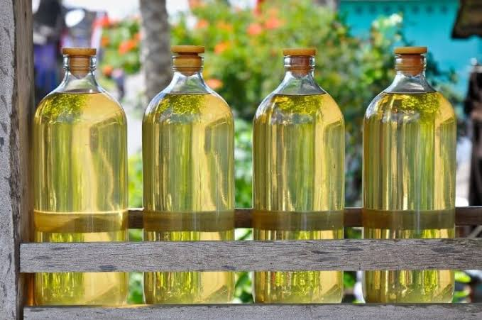
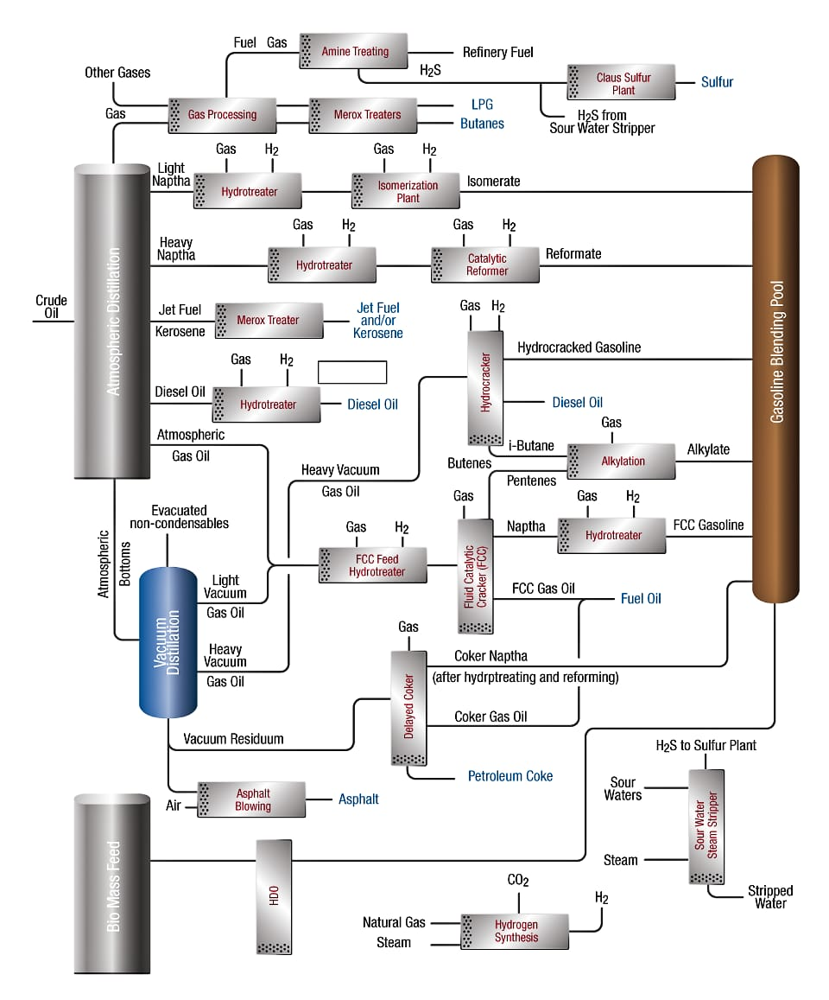
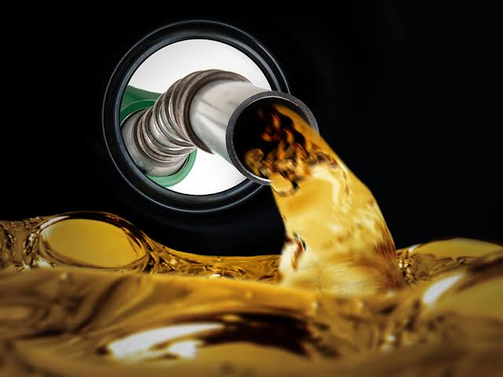

Gasoline, which is also spelled gasoline, is a mixture of volatile, flammable liquid hydrocarbons derived from petroleum.

From chemical view, gasoline is a complex mixture of hundreds of different hydrocarbons. Most are saturated and contain 5 to 12 carbon atoms per molecule.
Gasoline used in automobiles boils mainly between 30° and 200° C (85° and 390° F), the blend being adjusted to altitude and season. Aviation gasoline contains smaller proportions of both the less-volatile and more-volatile components than automobile gasoline.
Gasoline was at first produced by distillation, simply separating the volatile, more valuable fractions of crude petroleum.
Later processes are designed to raise the yield of gasoline from crude oil. Its mechanism depends on splitting large molecules into smaller ones; these processes are known as cracking.
Thermal cracking, employing heat and high pressures, was introduced in 1913 but was replaced after 1937 by catalytic cracking, in which catalyst is used. The application of catalysts facilitate chemical reactions producing more gasoline.
Other methods used to improve the quality of gasoline and increase its supply include polymerization, converting gaseous olefins, e.g. propylene and butylene, into larger molecules in the gasoline range; alkylation, a process combining an olefin and a paraffin such as isobutane; isomerization, the conversion of straight-chain hydrocarbons to branched-chain hydrocarbons; and reforming, using either heat or a catalyst to rearrange the molecular structure.

- Enable good engine performance - this is achieved by controlling octane number and volatility.
- Allow engines to start and run well in cold or hot weather - this is achieved by controlling volatility.
- Let engines run reliably and efficiently for a long time - this is achieved by controlling stability and corrosiveness, and the tendency of the gasoline to form residues and deposits in engines and fuel systems.
- Limit evaporative and exhaust emissions for environmental and health reasons - this is achieved by controlling volatility, total aromatics and olefins, and by efficient fuel vehicle technology.
- Be removed of unnecessary health risks - this is achieved by limiting benzene content, blending components like MTBE, and additives like lead or manganese.
- Able to benefit from new engine and emissions control technologies - this is achieved by limiting sulfur content and controlling octane number and volatility.
- Fuel for internal-combustion engines.
- A solvent for oils and fats.
- It became the preferred automobile fuel because of its high energy of combustion and capacity to mix readily with air in a carburetor.

Gasoline is full of toxic chemicals, but the biggest danger remains the flammability, and relative hazards to human health should be kept in perspective.
- Fundamentals Petroleum Refining book, first edition 2010